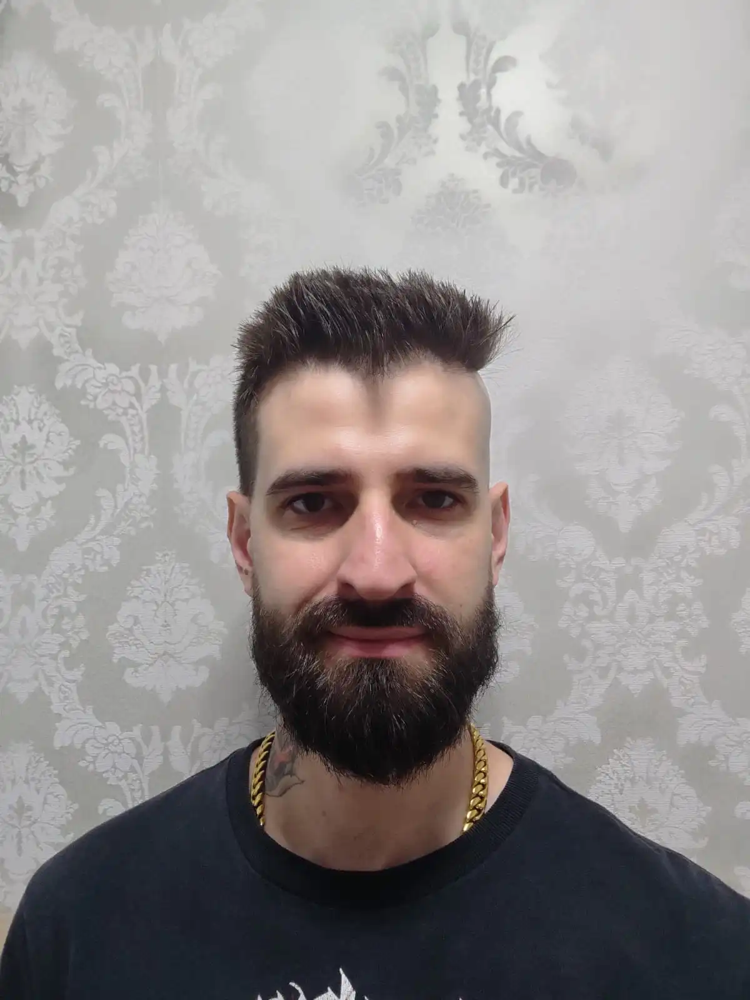
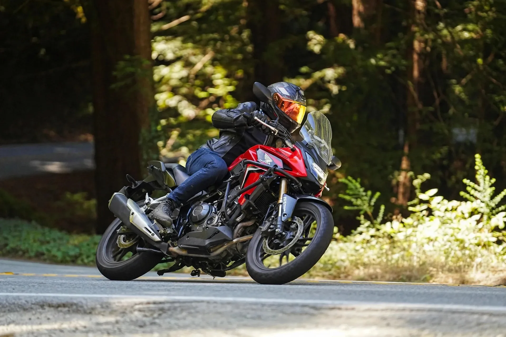

Sobre mim
Sou product designer em Curitiba. Transformo produtos B2B e soluções com IA em experiências simples.


Comecei em 2012 em uma agência local, criando sites. Em 2013 fui para a Zênite trabalhar com web design e marketing, e de 2016 a 2017 tive minha própria empresa de web design. Depois entrei na Gatefy pelo marketing e acabei como o único designer de uma plataforma de segurança de email, aprendendo design de produto na prática. Desde então, desenhei a plataforma de monitoramento do Selo UNICEF e, na Claro, trabalhei em vários produtos ao mesmo tempo, entre eles duas plataformas que depois unifiquei em uma só, com IA.
Conduzo o design de ponta a ponta, do discovery à entrega, lado a lado com POs, desenvolvedores e outros designers. Gosto de criar design systems do zero, para que os produtos continuem consistentes conforme crescem.
Longe da tela, você me encontra na estrada, com minha moto, ou planejando a próxima viagem.
Experiência
- fev 2023 – out 2026Product DesignerClaro
- jan 2022 – dez 2022UX/UI Designer SêniorONU | UNICEF
- jul 2021 – jan 2022UX/UI DesignerElectrolux
- nov 2020 – jun 2021Designer Sênior, Analista de Marketing e SEOSolo Network
- out 2017 – out 2020UX/UI Designer Líder, Marketing e SEOGatefy
- mar 2016 – out 2017Web DesignerEmpresa própria
- nov 2013 – nov 2015Web Designer e MarketingZênite
- fev 2012 – set 2012Web DesignerAgência local
Formação
- 2024Certificação UX-PM3UX Alliance
- 2016Bacharelado em Desenho Industrial – Design DigitalPUCPR
Idiomas
- NativoPortuguês
- FluenteInglês